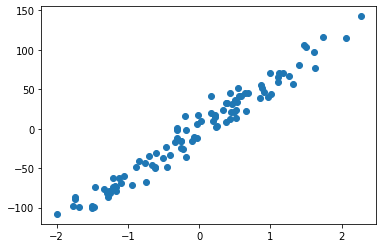
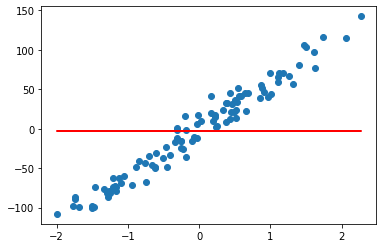
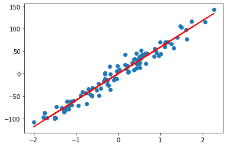

Regresión lineal usando estimadores sobre un conjunto artificial¶
30 min | Última modificación: Abril 6, 2020.
Importación de librerías¶
[1]:
import numpy as np
import matplotlib.pyplot as plt
%matplotlib inline
import tensorflow as tf
print(tf.__version__)
#
# Establece el nivel de reporte en
# pantalla de TensorFlow
#
import logging
logger = tf.get_logger().setLevel(logging.ERROR)
2.1.0
Carga y configuración del dataset¶
[2]:
#
# Datos del problema propuesto
#
from sklearn.datasets import make_regression
X, d = make_regression(
n_samples=100,
n_features=1,
n_informative=1,
bias=0.0, # intercepto
effective_rank=None, # numero de vectores singulares para explicar los datos
tail_strength=0.9, # ? importancia relativa de las colas
noise=12.0,
shuffle=False,
coef=False,
random_state=12136,
)
plt.scatter(X, d);

Columnas de características¶
Para columnas categoricas cuyos valores conocidos:
eye_color = tf.feature_column.categorical_column_with_vocabulary_list(
"eye_color",
vocabulary_list=["blue",
"brown",
"green"])
Para columnas categoricas para las que no se conocen todos los valores posibles:
education = tf.feature_column.categorical_column_with_hash_bucket(
"education",
hash_bucket_size=1000)
Para combinaciones:
sport_x_city = tf.feature_column.crossed_column(
["sport", "city"],
hash_bucket_size=int(1e4))
Bucketization:
age_buckets = tf.feature_column.bucketized_column(
age,
boundaries=[18, 25, 30, 35, 40, 45, 50, 55, 60, 65])
[3]:
#
# Indica que la columna `x` es numérica
#
column = tf.feature_column.numeric_column("x")
column
[3]:
NumericColumn(key='x', shape=(1,), default_value=None, dtype=tf.float32, normalizer_fn=None)
Funciones de entrada de datos para los estimadores¶
[4]:
#
# Función de entrada para el estimador.
#
# Debe retornar una tupla con (entradas, salida).
# Note que features es un diccionario que contine
# una paraja clave-valor por cada variable
# independiente
#
def input_fn_train():
features = {"x": np.array(X)}
labels = d
return features, labels
#
# Esta función es igual que la anterior, pero
# retorna únicamente el data.frame de variables
# independientes
#
def input_fn_predict():
features = {"x": X}
return features
Baseline regressor¶
[5]:
#
# Construye el estimador base, cuya salida es
# una constante.
#
regressor = tf.estimator.BaselineRegressor()
#
# Entrenamiento.
#
regressor.train(
# función de entrada
input_fn=input_fn_train,
# número de iteraciones (optimización)
steps=100,
)
#
# Pronostica para nuevos valores. En este
# caso se usa la misma función de entrada que
# para el entrenamiento.
#
results = regressor.predict(input_fn=input_fn_predict)
forecasts = []
for i, value in zip(X, results):
#
# Value es un diccionario por cada posible valor de x.
# El contenido de la clave predictions es un vector.
#
# print(" {:7.4f} {:7.4f}".format(i[0], value["predictions"][0]))
#
#
# Se almacenan los valores pronosticodos en una lista
# para poder graficarlos
#
forecasts += value["predictions"].tolist()
#
# Grafica los puntos de la muestra de datos
#
plt.plot(X, d, "o")
#
# Grafica los pronósticos del modelo
#
plt.plot(X, forecasts, "-", color="red")
#
# Imprime los estadísticos de error.
#
result = regressor.evaluate(input_fn=input_fn_train, steps=1)
print("\nTest set loss: {loss:0.3f}\n".format(**result))
Test set loss: 3448.505

Linear Regressor¶
[6]:
#
# Construye el estimador lineal, cuya salida es
# el resultado de la regresión lineal entre
# x y y.
#
regressor = tf.estimator.LinearRegressor(
feature_columns=[column], optimizer=tf.keras.optimizers.SGD(learning_rate=0.2)
)
#
# Entrenamiento
#
regressor.train(input_fn=input_fn_train, steps=500)
#
# Pronostica para nuevos valores. En este
# caso se usa la misma función de entrada que
# para el entrenamiento.
#
results = regressor.predict(input_fn=input_fn_predict)
forecasts = []
#
# No se puede iterar unicamente sobre results
# ya que es un generador y resulta en un
# ciclo infinito
#
for i, value in zip(X, results):
#
# Se almacenan los valores pronosticados
# en una lista para poder graficarlos
#
forecasts += value["predictions"].tolist()
#
# Grafica los puntos de la muestra de datos
#
plt.plot(X, d, "o")
#
# Grafica los pronósticos del modelo
#
plt.plot(X, forecasts, "-", color="red")
#
# Imprime los estadísticos de error.
#
result = regressor.evaluate(input_fn=input_fn_train, steps=1)
print("\nTest set loss: {loss:0.3f}\n".format(**result))
Test set loss: 129.973
